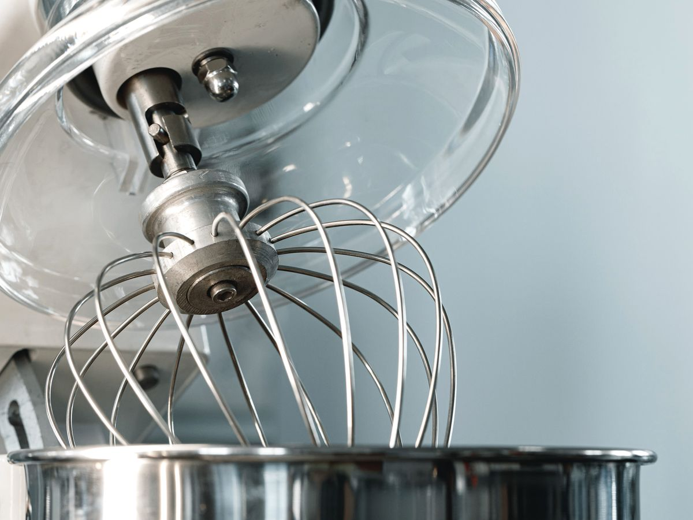
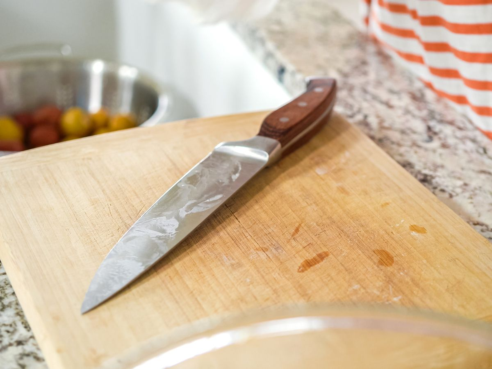

5 Things in My Bakery That Are Worth the Money
People always ask what's actually worth buying when you set up a kitchen. These five earn their keep and don't quit — the gear I use every day and the brands I trust.
People ask me all the time what's actually worth buying when you're setting up a kitchen. There's plenty you can cheap out on. These five aren't it. This is the stuff I use every day at the bakery — the things that earn their keep and just don't quit. Where a brand's worth it, I'll tell you the one I trust. Where any version will do, I'll say that too.
1. A real scale

Baking is weighing, not guessing. Cups lie — a cup of flour packed tight bakes different than a cup scooped light. A scale fixes that, and it's the cheapest upgrade that makes everything you make more consistent.
I use Avaweigh. Nothing fancy — accurate, and it holds up to a busy day. Get one that reads in grams and handles at least a few kilos.
2. A stainless steel rack

No brand on this one — just get stainless steel. Chrome racks rust the second they meet steam and sugar, and in a kitchen that's constant. Stainless takes the abuse, wipes clean, and lasts basically forever. Whatever fits your space. Buy it once, never think about it again.
3. A Hobart mixer

If you can swing it, a Hobart is the one. Built like a tank — plenty of bakeries are running Hobarts older than the baker. It'll mix stiff dough all day without walking off the counter or burning out.
If a Hobart's out of reach right now, Sybo makes a solid one for a lot less. Not the same forever-machine, but it punches above its price and it'll get you going.
4. A proper camera
If you're shooting your own content — and you should be — a real camera changes everything. Your phone is fine until it isn't. A proper body gives you the depth, the low light, the clean look that makes food actually look like food.
I shoot Canon or Sony. My video camera is a Sony a6600, and I shoot photos on a Canon Rebel. Either brand is a safe bet — pick a body in your budget and grow into it.
5. A Dexter knife

You don't need a fifty-dollar chef's knife to do good work. Dexter is what a lot of pros actually reach for — sharp, simple, cheap enough to replace, and it holds an edge. One good Dexter does most of what you need.
Honorable mentions
- A Boos butcher block. A John Boos block is a joy to work on and lasts a lifetime if you oil it. Worth it if you've got the counter for one.
- A solid oven. When you're ready to step up, I like Blodgett. Even heat, even bake, and they run for years.
That's the list. None of it's flashy. It's just the gear that shows up for work every day and doesn't let me down. Buy the good version once and you stop replacing the cheap version every year.